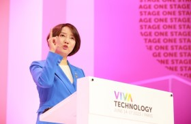

About
What does K-StarVerse mean?
K스타버스는 ‘코리아’, ‘스타트업’, ‘메타버스’를 결합한 명칭입니다.
디지털 가상공간에서 투자와 글로벌 창업을 지원하고, 원스톱 행정이 가능하도록 조성합니다.

Our vision for KSV
가상세계에서 창업에 따르는 각종 행정절차와 투자설명회(IR), 생태계 참여자간 네트워킹 등 실제 업무를 동일하게 수행할 수 있도록 하는게 목표입니다.
최근 빅테크 기업을 중심으로 속속 출사표를 내고 있는 업무용 메타버스 플랫폼이 지향점이며
민간 기술을 활용해 거대언어모델(LLT) 등 진화하는 기술에 맞춰 확장이 가능하도록 플랫폼을 구축할 계획입니다.

Planning in KSV
목표모델 설계를 거쳐 내년부터 플랫폼 구축에 착수하고, 내년 중 먼저 구축된 분야부터 가동, 이후 5년간 장기적으로 플랫폼을 수정·보완하면서 안정화할 계획입니다.
구체적인 실현 방안은 조만간 발표한 범정부 종합대책인 ‘스타트업 코리아’에 담깁니다.
Requirements for KSV
K-스타버스의 개발 취지인 '전세계 스타트업 누구나 자유롭게 접속할 수 있도록 한다'는 목표에 맞게
고사양의 IT 장비가 필요한 메타버스 플랫폼은 지양했습니다.
대신 언제 어디서나 연결할 수 있도록 그래픽 품질을 낮춰 쉽고 빠르게 접속할 수 있게 했습니다.